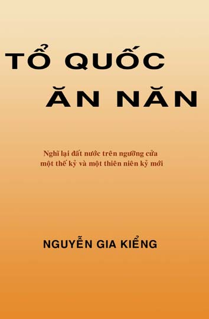

Tôi phải cám ơn trước hết toàn bộ các chí hữu trong gia đình Thông Luận, nơi kiến thức và nhận thức của tôi đã hình thành nhờ nhưng cuộc thảo luận và trao đỏi và cũng đã một phần nào được thử nghiệm qua hành động.
Một lòng biết ơn xâu xa xin được gởi tới những bậc thầy đã uốn nắn cách suy nghĩ của tôi. Các giáo sư Vũ Khắc Khoan, Lê Ngọc Huỳnh, Nguyễn Xuân Kỳ, hiện nay không còn nữa. Một lời tưởng nhớ cũng xin được gởi đến cố giáo sư Nguyễn Ngọc Huy, một người bạn thân và một người anh lớn đã chỉ dạy cho tôi rất nhiều khi mới hoạt động chính trị, rất tiếc là ông đã mất trước khi chúng tôi có thể sát cánh với nhau trong cùng một tổ chức.
Dĩ nhiên tôi không thề không nhắc tới thân phụ tôi, người thày đầu tiên của tôi, đã tạo ra tôi cả xác lẫn hồn và mẹ tôi, người đã cho tôi bài học quí giá nhất: đấu tranh chính trị trước hết là bằng trái tim.
Đoàn Xuân Kiên, Võ Xuân Minh và Diệp Tường Bảo đã đọc lại và góp ý.
Lời cảm tạ sau cùng nhưng đặc biệt nhất xin dành cho Nguyễn Văn Huy, người đã thúc giục tôi viết cuốn sách này. Huy là tiến sĩ về dân tộc học và giảng dạy về môn dân tộc học vùng Đông Nam á tại Đại Học Paris 7. Huy rất say mê khảo cứu lịch sử Việt Nam và đã góp ý với tôi trong nhiều nhận định. Dù không chia sẻ hoàn toàn những gì tôi viết, Huy đã tình nguyện đọc lại, sửa chữa và thay tôi lo phần việc in ấn cuốn sách này.
Nguyễn Gia Kiểng
____________________________________________